Lab 03 · Foundations
Initial bipartition
Refinement methods such as Kernighan–Lin and FM only improve a split, so they need a legal one to start from. This lab builds that first split three ways (random, greedy and grow), reports its cutsize and balance, and shows that the start decides how much work is left.
Slides
All 22 slides of the video. Click one to open it full size, or download the whole deck.

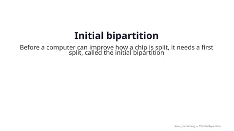

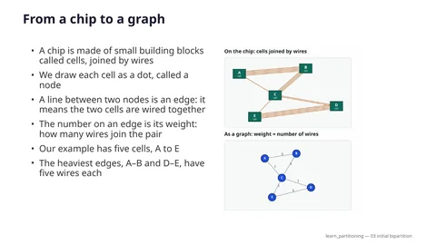

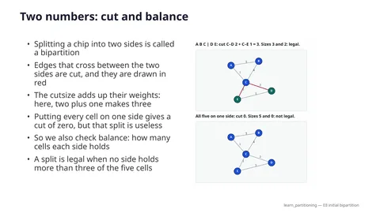

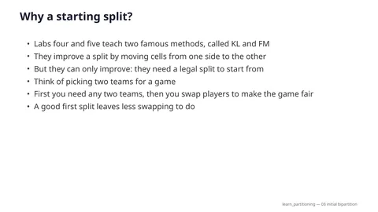

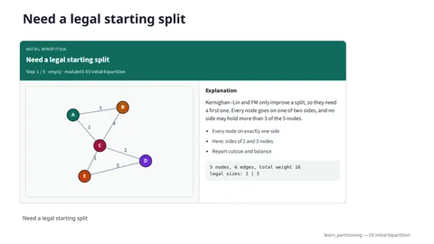

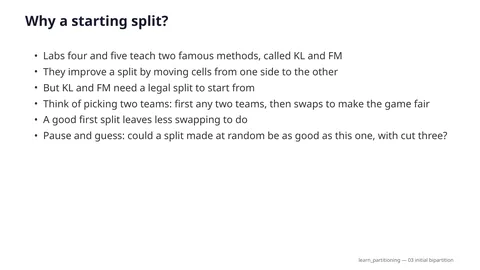


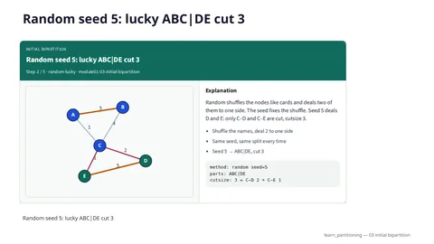

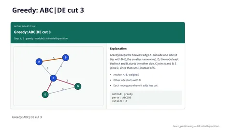

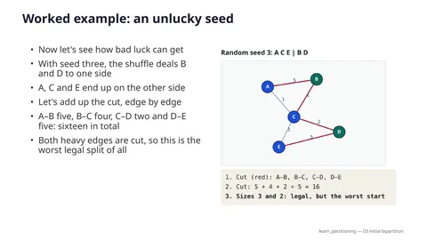

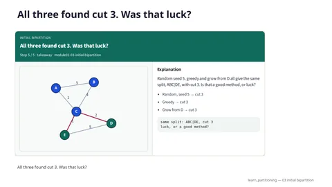

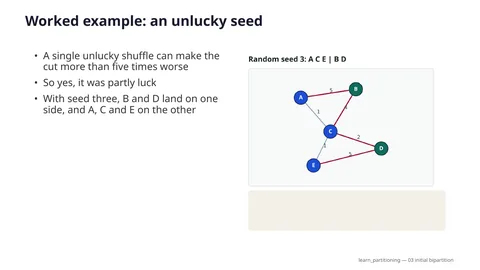

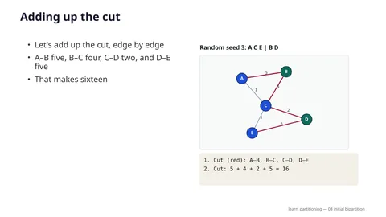

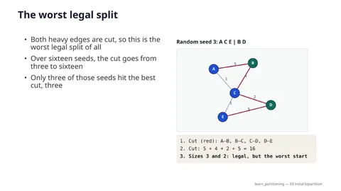

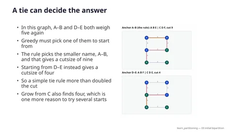

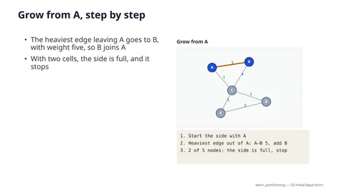

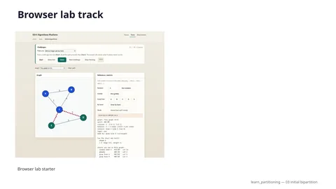

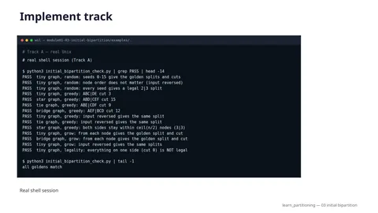

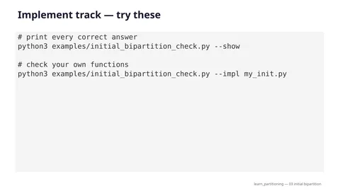

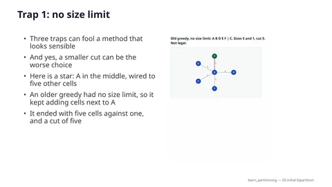

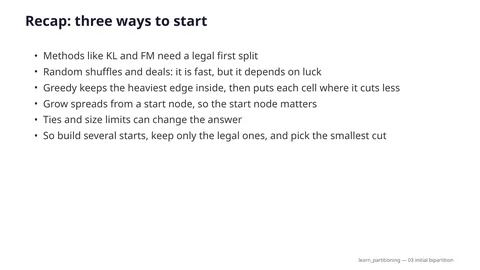

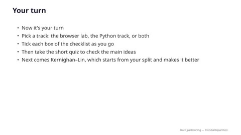
Walkthrough
The five frames of the video that build a first split on the tiny graph, with the caption of each step.

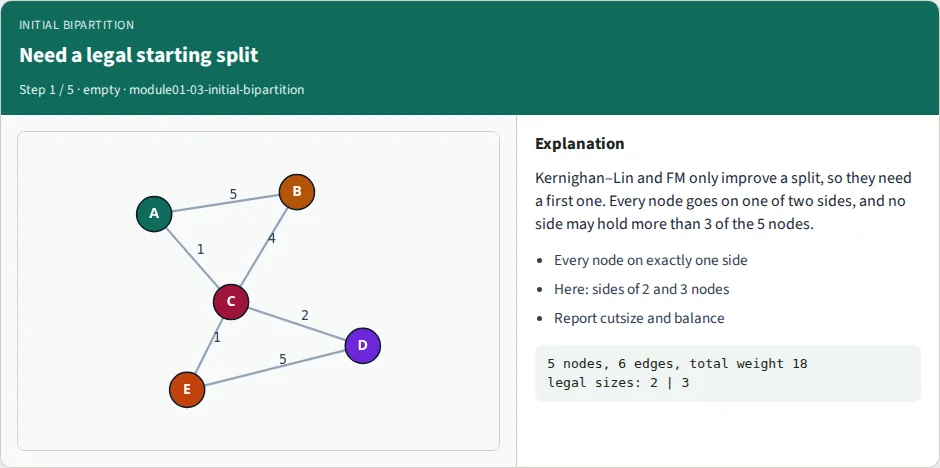
- Every node on exactly one side
- Here: sides of 2 and 3 nodes
- Report cutsize and balance

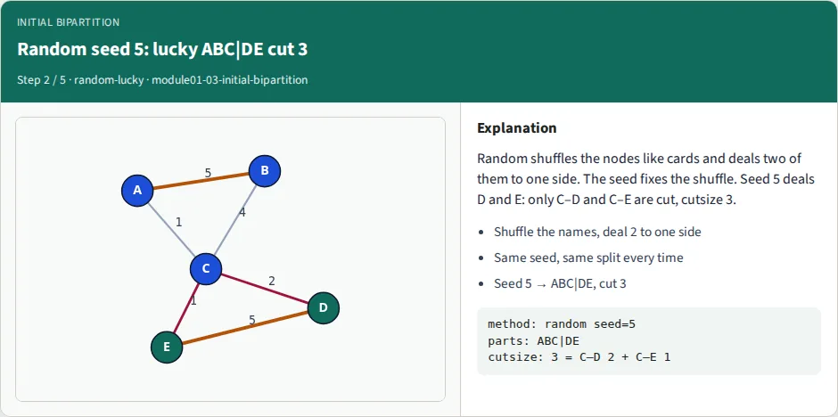
- Same seed, same split every time
- Seed 5 → ABC|DE, cut 3
- Seed 3 → ACE|BD, cut 16

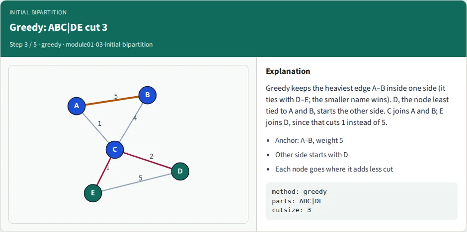
- Anchor: A–B, weight 5
- Other side starts with D
- Each node goes where it adds less cut

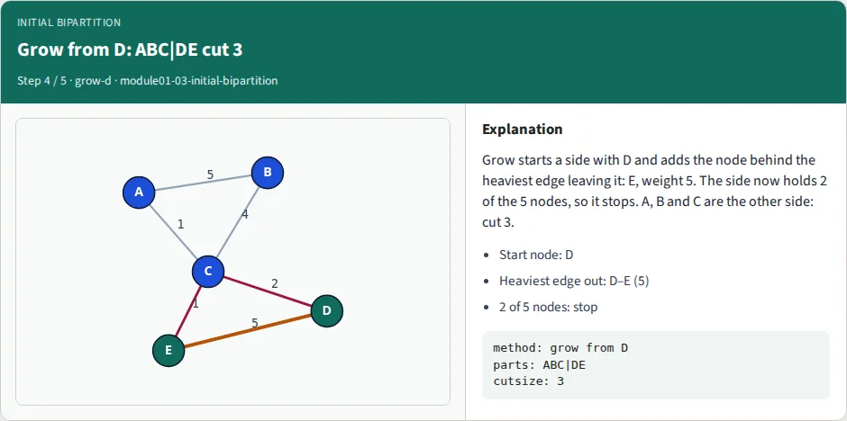
- Start node: D
- Heaviest edge out: D–E (5)
- Grow from A → AB|CDE, cut 5

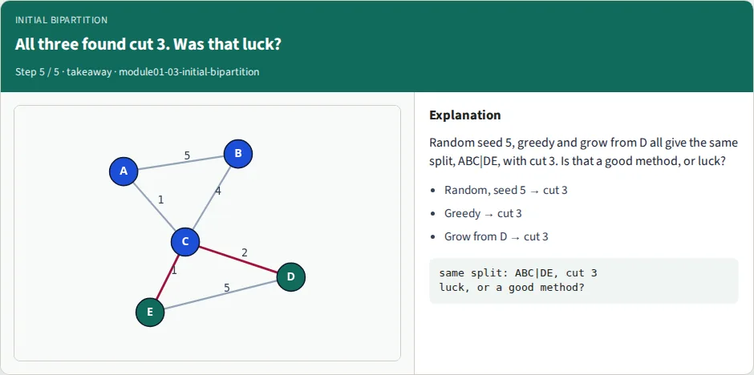
- Random: 3 to 16, depends on the seed
- Grow: 3, 5 or 9, depends on the start
- Greedy: 3 here, but not always
Interactive lab
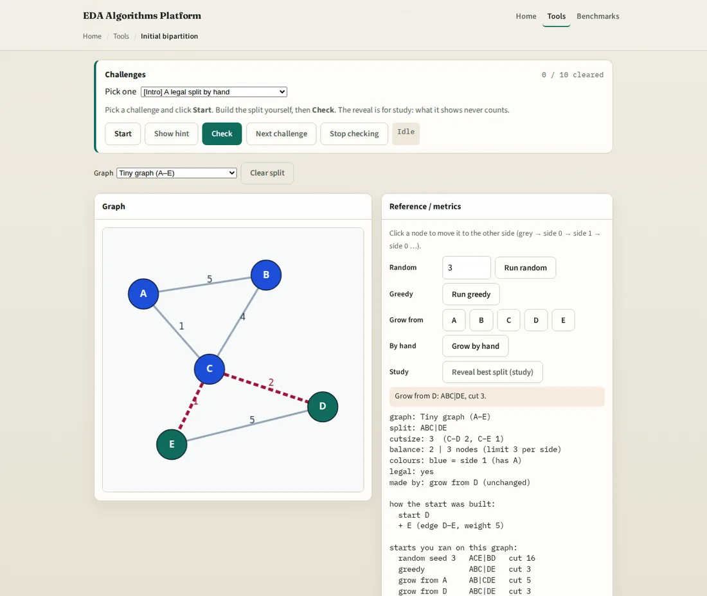
Build the splits yourself, right in the browser:
- Click nodes to move them between the two sides and watch the cutsize and the balance.
- Run random (with a seed you type), greedy, and grow from any node, and compare their cuts in a log.
- Grow a side by hand, in the rule's order, through a tie.
- Four graphs (tiny, star, tie, bridge), each showing one idea that flips a result.
Ten challenges, from Intro to Stretch, check the split you built, not the button you pressed. A start you edit no longer counts as that start, and the study reveal never counts.
Implement (Track A)
Write the three start functions yourself (random, greedy, grow) and check them against the goldens. The commands below run inside the course repository, from courses/learn_partitioning/module01-03-initial-bipartition/.
tiny_graph.jsonTiny graph (the main golden)
star_graph.jsonStar graph: the size limit decides
tie_graph.jsonTie graph: the tie-break decides
bridge_graph.jsonBridge graph: the heaviest wire is not inside
initial_bipartition_check.pyGolden self-check; --impl checks your code
Examples — Initial bipartition
Track A (implement). Graphs are in examples/, the answer key is examples/initial_bipartition_check.py.
Every number below was printed by that checker (python3 examples/initial_bipartition_check.py --show).
Run it from this module folder; it needs only the Python standard library.
Goal
Refinement algorithms (Kernighan–Lin in Lab 04, Fiduccia–Mattheyses in Lab 05) only improve a split. They need a legal starting split first. Build three kinds of start, report cutsize and balance for each, and see how much the start changes the answer.
Definitions
- Split: every node on exactly one of two sides, called
"0"and"1".AB|CDEmeans A, B on one side and C, D, E on the other. Swapping the labels gives the same split. - Cutsize: total weight of the edges whose two ends are on different sides.
- Balance: side sizes. Here every node has size 1, so sizes are node counts.
ratio= smaller side / larger side,imbalance= |difference| / total (both fromcommon/graphutil.pybalance_metrics). - Legal start: both sides non-empty and neither side larger than ceil(n / 2). For 5 nodes the sides may be 2|3 (not 1|4, not 0|5). For 6 nodes only 3|3 is legal.
- cap = ceil(n / 2) nodes per side. half = floor(n / 2) nodes.
Why the cap: putting every node on one side gives cutsize 0, which looks perfect and is useless. A cut is only worth comparing between legal splits.
API (what --impl looks for)
nodes is a list of names, edges is a list of (u, v, w) tuples with u < v. Each function returns
{node: "0" | "1"}. Your functions may receive the nodes and edges in any order; the answer must not depend on it.
random_bipartition(nodes, seed) # seeded shuffle, deal half
greedy_bipartition(nodes, edges) # anchor on the heaviest edge
grow_bipartition(nodes, edges, start) # flood outward from one node
is_legal(nodes, assignment) # True when the split is legal
You may copy mulberry32 from the checker. Python's random and JavaScript's Math.random never agree, so the
checker and the browser lab share this one small generator.
Pseudocode
Random start
random(seed):
order = nodes sorted by name
rng = mulberry32(seed); throw away its first two numbers
for i = n-1 down to 1:
j = floor(rng() * (i + 1))
swap order[i], order[j]
side 0 = first floor(n/2) nodes of order, side 1 = the rest
Why throw away two numbers: the first outputs of small seeds look alike. Without it, seeds 0, 1, 2, 3 would all give the same split on the tiny graph.
Greedy start (exact rule)
greedy:
cap = ceil(n/2)
1. anchor = the heaviest edge. Tie: smaller (u, v). Both ends go to side 0.
2. seed of side 1 = the unplaced node with the smallest total weight to the placed nodes.
Tie: smaller name. It goes to side 1.
3. while nodes remain:
x = the unplaced node with the largest total weight to the placed nodes. Tie: smaller name.
cost0 = weight from x to side 1 (cut added if x joins side 0)
cost1 = weight from x to side 0 (cut added if x joins side 1)
only a side with fewer than cap nodes may be chosen
put x on the cheaper allowed side; equal cost: side 0
Grow start (exact rule)
grow(start):
half = floor(n/2)
grown = [start]
while len(grown) < half:
add the node outside grown that is reached by the heaviest single edge leaving grown
Tie: smaller name. If no edge leaves, add the smallest unplaced name.
side 0 = grown, side 1 = the rest
Try several starts
best_start: build random(seed) for a few seeds, greedy, and grow(x) for every node x.
Throw away illegal ones, keep the smallest cutsize. Tie: the first one built.
Golden tables
Tiny graph
A–B 5, A–C 1, B–C 4, C–D 2, D–E 5, C–E 1. Total weight 18. Only ten legal splits exist (2|3 on 5 nodes):
| Split | Cut | Split | Cut | |
|---|---|---|---|---|
| ABC|DE | 3 | AC|BDE | 12 | |
| AB|CDE | 5 | AE|BCD | 12 | |
| ADE|BC | 9 | AD|BCE | 13 | |
| ABE|CD | 11 | ACD|BE | 15 | |
| ABD|CE | 12 | ACE|BD | 16 |
Random, seeds 0 to 15 (all sides 2|3, legal):
| Seed | Split | Cut | Seed | Split | Cut | |
|---|---|---|---|---|---|---|
| 0 | ABE|CD | 11 | 8 | AD|BCE | 13 | |
| 1 | AB|CDE | 5 | 9 | ACD|BE | 15 | |
| 2 | AE|BCD | 12 | 10 | AC|BDE | 12 | |
| 3 | ACE|BD | 16 | 11 | AB|CDE | 5 | |
| 4 | ABD|CE | 12 | 12 | ACD|BE | 15 | |
| 5 | ABC|DE | 3 | 13 | ADE|BC | 9 | |
| 6 | ABD|CE | 12 | 14 | ABC|DE | 3 | |
| 7 | AD|BCE | 13 | 15 | ABC|DE | 3 |
Why: the same graph gives cuts from 3 to 16 depending only on the seed. Seeds 5, 14 and 15 hit the best split. The best cut so far, seed by seed: seed 0 gives 11, seed 1 gives 5, seed 5 gives 3. A single random start is luck.
Greedy:
| Step | What happens | Sides now |
|---|---|---|
| 1 | Anchor. A–B and D–E both weigh 5; the smaller (u, v) is A–B. | A B | |
| 2 | Side-1 seed. Weight to {A, B}: C 5, D 0, E 0. Smallest is D (tie D, E by name). | A B | D |
| 3 | Next x = C (weight 7 to placed). cost0 = 2 (to D), cost1 = 5 (to A, B). Side 0. | A B C | D |
| 4 | Next x = E. cost0 = 5 (to D), cost1 = 1 (to C). Side 0 is already at the cap of 3, so side 1 anyway. | A B C | D E |
Result ABC|DE, cut 3, sizes 3|2, ratio 0.67, imbalance 0.20.
Grow, from each start node (half = 2, so one node is added):
| Start | Heaviest edge leaving the start | Split | Cut |
|---|---|---|---|
| A | A–B 5, so add B | AB|CDE | 5 |
| B | B–A 5, so add A | AB|CDE | 5 |
| C | C–B 4, so add B | ADE|BC | 9 |
| D | D–E 5, so add E | ABC|DE | 3 |
| E | E–D 5, so add D | ABC|DE | 3 |
Why: grow from D takes E (weight 5) and stops, so A, B, C stay together on the other side and only the light wires C–D (2) and C–E (1) are cut. Grow from C takes B (weight 4) and leaves A alone on the other side, so A–B (5), A–C (1), C–D (2) and C–E (1) are all cut: 9.
Best of several starts (random not used): greedy and the five grows give cuts 3, 5, 5, 9, 3, 3. The best is greedy with cut 3, split ABC|DE.
Extra graph 1: star_graph.json — the size cap
A–B 9, and A to each of C, D, E, F with weight 5. Six nodes, so only 3|3 is legal. Total weight 29.
| Start | Split | Sizes | Cut | Legal? |
|---|---|---|---|---|
| greedy (with cap) | ABD|CEF | 3|3 | 15 | yes |
| OLD greedy (no cap) | ABDEF|C | 5|1 | 5 | no |
Why: the old rule keeps putting nodes next to A, because that adds no cut. The cut looks 3 times better but one side holds five of six nodes. A cut of 5 does not beat a cut of 15 when the 5 is not a legal start. (The lowest cut any 3|3 split can have is 15, so the capped greedy is optimal here.)
Extra graph 2: tie_graph.json — a tie decides the answer
A–B 5, A–E 3, B–F 3, C–D 1, D–E 5, E–F 1. Both A–B and D–E weigh 5.
| Anchor | Split | Cut |
|---|---|---|
| A–B (smaller name, the rule) | ABE|CDF | 9 |
| D–E (the other tie) | ABF|CDE | 4 |
Reversing the order of the nodes and edges you pass in must not change the result: the rule says "smaller (u, v)", not "first in the list". Grow from C or from F also finds ABF|CDE, cut 4. Best of greedy and the six grows: 4, from grow C.
Extra graph 3: bridge_graph.json — the heaviest wire is not always inside
Two triangles A–B–C and D–E–F, every triangle edge 3, joined by the bridge C–D with weight 4. Total weight 22.
| Start | Split | Cut |
|---|---|---|
| greedy | AEF|BCD | 12 |
| grow A or B | ABC|DEF | 4 |
| grow C or D | ACD|BEF | 12 |
| grow E | ABF|CDE | 12 |
| grow F | ABE|CDF | 12 |
Why: the heaviest edge is the bridge, so greedy anchors on C–D and starts with one node from each triangle on the same side. Grow from C also takes D first (weight 4 beats 3), then A (a four-way tie at 3, smallest name), giving ACD. Grow from A takes B (A–B and A–C tie at 3, smaller name), then C, and keeps the triangle whole. Best of greedy and the six grows: 4, from grow A.
The old greedy, for contrast
The greedy in the shared lab code before this upgrade is written out in the checker as greedy_legacy. It is not a
reference. It had no size cap, and it forced the alphabetically first leftover node (C on the tiny graph) onto
side 1 without looking at any weight.
| Graph | OLD greedy | New greedy |
|---|---|---|
| tiny | AB|CDE, cut 5 | ABC|DE, cut 3 |
| tiny, letters renamed A↔E and B↔D | AB|CDE, cut 3 | cut 3 |
| star | ABDEF|C, sizes 5|1, cut 5 (not legal) | ABD|CEF, sizes 3|3, cut 15 |
The same graph with other letters gave the old greedy another cut, so its "cut 5" depended on the names, not on the graph. The new rule only reads names to break ties.
The benchmark tools of Lab 12 still use the older random and greedy, so their numbers differ from the tables above.
Try these
python3 examples/initial_bipartition_check.py # all PASS for the reference
python3 examples/initial_bipartition_check.py --show # print every table above
python3 examples/initial_bipartition_check.py --impl my_init.py # check your own functions
python3 examples/initial_bipartition_check.py --vs-node # PRNG and shuffle match the browser lab (needs node)
Start with random_bipartition (seed table), then is_legal, then grow_bipartition, then greedy_bipartition.
A function you have not written yet shows SKIP.
Starter prompts (ask why)
- Seeds 0 and 5 on the tiny graph give cuts 11 and 3. In one sentence, why can the same method give both?
- Grow from C gives cut 9 and grow from D gives cut 3. Which edge decides the first step in each case?
- On the star graph the old greedy has a smaller cut (5) than the new one (15). Why is the new one the one you would hand to Kernighan–Lin?
- On the tie graph the cut is 9 with anchor A–B and 4 with anchor D–E. Write a tie-break rule that does not depend on letters. Does your rule make the cut 4?
- On the bridge graph greedy gets 12 and grow from A gets 4. What is the weakness of "anchor on the heaviest edge"?
Expected artifacts
- The split, cutsize and sizes of every start in the tables above, printed by your code.
- A sentence per start explaining why its cut is as low or as high as it is.
Stretch
- Write
best_start(random seeds 0 to 3, greedy, every grow): does it find cut 4 on the tie graph? - Make the cap use node sizes instead of node counts (give C size 3 and see which splits stay legal).
Quiz
8 quick questions on this lab. Pick an answer for each, then check.
Full narration transcript
Initial bipartition
Before a computer can improve how a chip is split, it needs a first split. That first split is called the initial bipartition. You will meet three ways to build one: random, greedy and grow. You will see the same small graph get a cut of three, or a cut of sixteen. And you will learn the simple habit that fixes it: try several starts, and keep the best.
From a chip to a graph
A chip is made of small building blocks called cells, joined by wires. We draw each cell as a dot, called a node. A line between two nodes is an edge: it means the two cells are wired together. The number on an edge is its weight: how many wires join the pair. Our example has five cells, A to E. The heaviest edges, A–B and D–E, have five wires each.
Two numbers: cut and balance
Splitting a chip into two sides is called a bipartition. Edges that cross between the two sides are cut, and they are drawn in red. The cutsize adds up their weights: here, two plus one makes three. Putting every cell on one side gives a cut of zero, but that split is useless. So we also check balance: how many cells each side holds. A split is legal when no side holds more than three of the five cells.
Why a starting split?
Labs four and five teach two famous methods, called KL and FM. They improve a split by moving cells from one side to the other. But they can only improve: they need a legal split to start from. Think of picking two teams for a game. First you need any two teams, then you swap players to make the game fair. A good first split leaves less swapping to do.
Need a legal starting split
Here is our graph again, before any split. It has five cells, so the sides will hold two cells and three cells. Every method reports two numbers: the cutsize and the balance. Let's build a first split in three different ways.
Random seed 5: lucky ABC|DE cut 3
Method one is random. Write the five names on cards, shuffle them, and deal two cards to one side. The other three cards go to the other side. A computer shuffles using a number called the seed. The same seed always gives the same shuffle. With seed five, D and E land together. Only C–D and C–E are cut, so the cutsize is three. That is the best split this graph has, found by pure luck.
Greedy: ABC|DE cut 3
Method two is greedy: at each step, it takes what looks best right now. It starts by putting both ends of the heaviest edge on one side. A–B and D–E both weigh five, so a fixed rule picks the smaller name: A–B. D starts the other side: it has no wire to A or B, and it comes before E. C joins A and B, with five wires there against two to D. Last, E joins D, which cuts only the edge of weight one to C. The cutsize is three.
Grow from D: ABC|DE cut 3
Method three is grow. Pick a start node, and grow a side around it, like a drop of ink spreading on paper. At each step, add the node behind the heaviest edge that leaves the side. Start from D. The heaviest edge out of D goes to E, with weight five. Now the side holds two of the five cells, which is enough, so it stops. A, B and C form the other side, and the cutsize is three again.
Try several starts, keep the best
So far, all three methods found the same split. But that was partly luck. Other seeds and other start nodes give cuts from three up to sixteen. Each of those splits is legal, so none of them is wrong. That is why we build several starts, and keep the one with the smallest cut.
Worked example: an unlucky seed
Now let's see how bad luck can get. With seed three, the shuffle deals B and D to one side. A, C and E end up on the other side. Let's add up the cut, edge by edge. A–B five, B–C four, C–D two and D–E five: sixteen in total. Both heavy edges are cut, so this is the worst legal split of all. Out of the sixteen seeds we tried, only three give the best cut of three.
Grow depends on the start node
Grow has no luck in it, but it has a choice: the start node. Start from A instead of D. The heaviest edge out of A goes to B, with weight five, so B joins A. With two cells, the side is full, and it stops. Now C, D and E form the other side, so A–C and B–C are cut. One plus four makes five, which is worse than three. Starting from C is even worse: a cutsize of nine.
Keep the best legal start
The fix is simple: never trust a single start. Build several: a few random seeds, greedy, and grow from every node. Throw away any split that breaks the size rule. Keep the one with the smallest cut. On our graph, greedy and the five grows give three, five, five, nine, three and three. The best is three: A, B and C against D and E.
A size limit keeps the split legal
Here is a star: A sits in the middle, wired to every other cell. A–B weighs nine, and the four other edges weigh five. With six cells, each side must hold exactly three. An older greedy had no size limit, so it kept adding cells next to A. It ended with five cells against one: cutsize five, but not legal. Our greedy stops each side at three cells, and gets fifteen. No legal split of this star does better.
A tie can decide the answer
In this graph, A–B and D–E both weigh five again. Greedy must pick one of them to start from. The rule picks the smaller name, A–B, and that gives a cutsize of nine. Starting from D–E instead gives a cutsize of four. So a simple tie rule more than doubled the cut. Grow from C also finds four, which is one more reason to try several starts.
The heaviest wire is not always inside
Here are two triangles, joined by one bridge, C–D, with weight four. Every triangle edge weighs three. The natural split puts one triangle on each side, and cuts only the bridge. But greedy starts from the heaviest edge, and here that is the bridge itself. So C and D begin on the same side, and the cut ends up at twelve. Grow from A keeps its triangle together, and cuts only the bridge: four.
Browser lab track
In the browser lab, you work on the same small graph. You can move cells from one side to the other, and watch the cutsize and the balance change. You can also run random, greedy and grow, and compare their cuts. The challenges check the split you built, not the button you clicked. For example, find the start node that gives the smallest cut.
Implement track
If you like programming, write the three methods in Python. The examples file gives the exact rules, including how to break ties. First, run the checker to print every correct answer. Then write your own functions, and run the checker on your file. It also feeds the graph in reverse order, so a missing tie rule shows up as a failure.
Pitfalls to watch
Watch out for four common mistakes. Reporting the cutsize without the balance. Letting one side grow past its limit, which makes the cut look better than it really is. Trusting a single random seed: on our graph, the cut ranged from three to sixteen. And breaking ties by the order of the input, so the answer changes when the file changes.
Recap: three ways to start
Methods like KL and FM need a legal first split. Random shuffles and deals: it is fast, but it depends on luck. Greedy keeps the heaviest edge inside, then puts each cell where it cuts less. Grow spreads from a start node, so the start node matters. Ties and size limits can change the answer. So build several starts, keep only the legal ones, and pick the smallest cut.
Your turn
Now it's your turn. Pick a track: the browser lab, the Python track, or both. Tick each box of the checklist as you go. Then take the short quiz to check the main ideas. Next comes Kernighan–Lin, which starts from your split and makes it better.